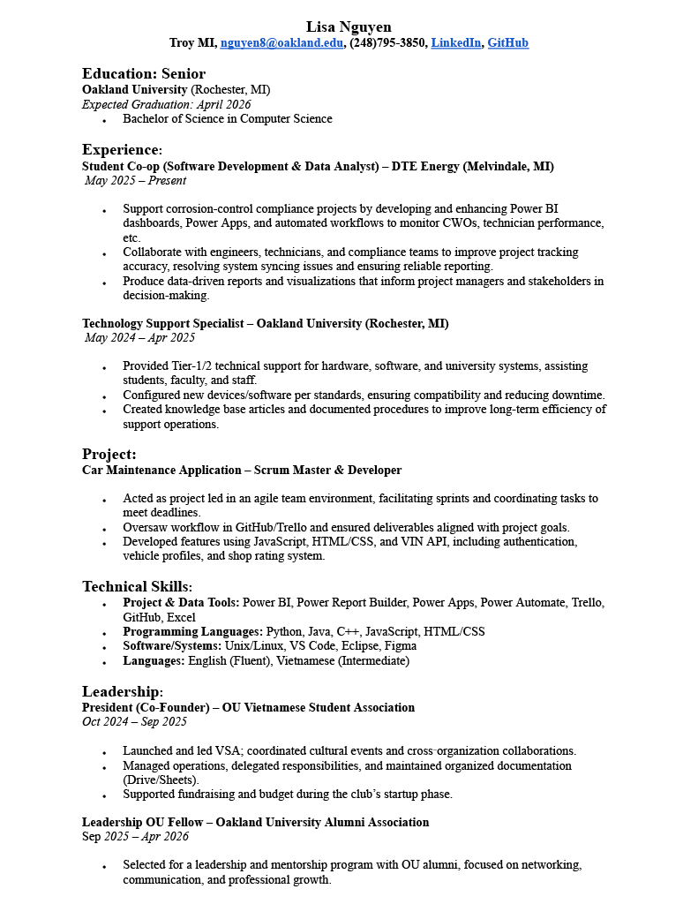

Car Maintenance App Team • Scrum Master
Vehicle profiles (create/edit/display), user auth, shop ratings, and VIN API integration. I led planning and task delegation, kept sprints on track, and shipped the core features.
CS student • Software & Data Co-op @ DTE • Power Platform + Python
I’m a Senior at Oakland University (BS in Computer Science, expected graduation April 2026). I build practical tools and dashboards: Power Apps, Power Automate, Power BI/Report Builder, and Python—currently on the Corrosion Engineering team at DTE Energy. I like taking messy workflows and turning them into clean, reliable experiences.
Vehicle profiles (create/edit/display), user auth, shop ratings, and VIN API integration. I led planning and task delegation, kept sprints on track, and shipped the core features.
Weather UI for daily/weekly forecasts + moon phases with °F/°C toggle and location input.
Optimized dashboards for CWOs, technician performance, and MPSC inspection progress. Fixed Power BI ↔ Power Apps sync issues and added quality-of-life features (e.g., search, request forms).
President (Founder) — Vietnamese Student Association (Oct 2024 – Sep 2025)
Click to open the full PDF. Displaying an image for quick preview.
Best way to reach me: